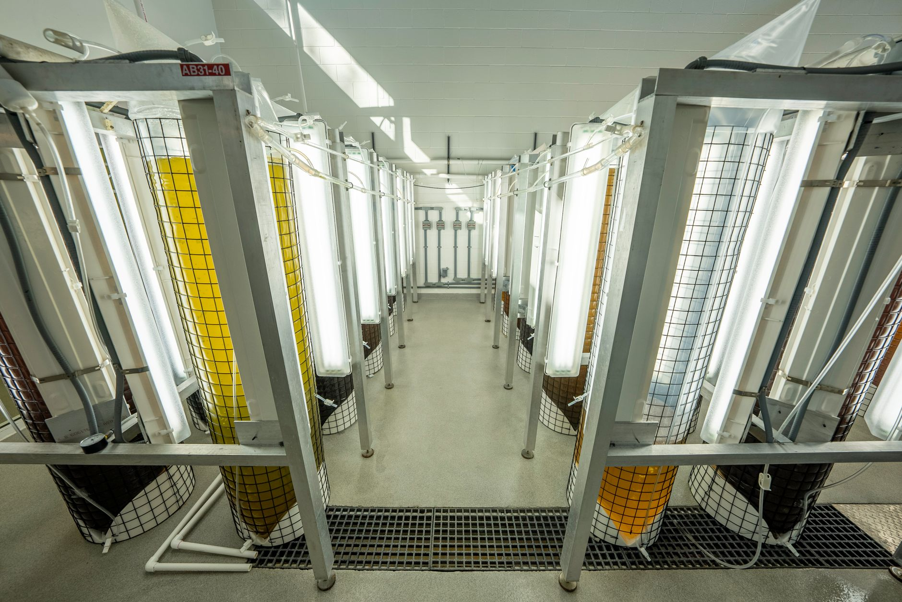

삼성 파업에 미국이 긴장한 진짜 이유

미국 반도체 업계는 삼성전자 파업 장기화 가능성을 AI 가속기 및 HBM 공급 일정에 직결된 변수로 인식하고 있다는 KBS 인터뷰가 공개됐다. 미국 반도체산업협회(SIA) 보고서에 따르면 삼성전자와 SK하이닉스 두 기업이 전 세계 DRAM 생산의 약 72%, HBM 공급의 절반 이상을 담당한다.
엔비디아·AMD 등 AI 가속기 업체들은 HBM 공급 다변화를 위해 마이크론 확대를 추진 중이나, 마이크론의 HBM3E 양산 점유율은 2025년 기준 15% 내외에 그친다. 삼성전자 HBM 공급 차질 시 엔비디아 H200·B200 시리즈 출하 일정이 최소 1~2분기 지연될 수 있다는 업계 추정이 나온다.
삼성전자 전국삼성전자노동조합(전삼노)의 파업은 2024년 이후 단속적으로 반복되며 협상 장기화 양상을 보이고 있다. 파업 참여 인원은 최대 수천 명으로 전체 생산직의 10~15% 수준이나, 핵심 공정 숙련 인력 이탈은 수율 관리에 즉각적 영향을 줄 수 있다는 점이 미국 측의 우려 포인트다.
미중 기술패권 갈등 구도에서 미국이 삼성전자를 '대체 불가 공급자'로 명시적으로 의존하는 구조는 단기 협상 레버리지를 한국에 부여하는 동시에, 공급 불안 발생 시 미국의 직접 개입 명분을 만드는 양면성을 갖는다. TSMC 아리조나 공장 건설 압박이 그 선례다.
삼성전자 파업을 미국이 예의주시한다는 것은, 한국 기업의 노사 문제가 더 이상 내부 사안이 아니라 미국 국가안보 공급망 관리의 변수로 편입됐음을 의미한다. 동맹국 내 공급망 불안 요인에 대해 미국이 직간접적 개입 신호를 보내는 선례는 이미 TSMC와 인텔에서 확인된 바 있다.
'한국이 핵심'이라는 미국의 인식은 한국의 협상 레버리지이면서 동시에 리스크다. 삼성전자가 공급 불안을 지속시킬 경우, 미국이 생산 이전이나 대체 투자 확대를 압박하는 구조로 전환될 수 있다. HBM 공급 차질이 현실화되면 마이크론 증산 지원 명분이 강화된다.
마이크론은 삼성전자 HBM 공급 불안이 지속되는 국면에서 미국 정부의 CHIPs법 지원을 등에 업고 HBM3E 양산 확대 투자를 가속할 유인이 생긴다. 이미 2024년 CHIPs법 보조금 61억 달러를 확보한 마이크론의 아이다호·뉴욕 투자 계획이 앞당겨질 가능성이 있다.
SK하이닉스는 삼성전자 파업으로 HBM 공급 신뢰도 격차가 벌어질 경우, 엔비디아 등 주요 고객사와의 장기 공급 계약에서 점유율 확대 기회를 얻는다. 2025년 HBM3E 점유율 50% 이상을 유지하는 SK하이닉스에게 삼성전자 공급 불안은 직접 수혜 구간이다.
삼성전자는 파업 장기화 시 HBM 수율 관리 리스크와 함께, 미국 고객사들의 공급처 다변화 가속이라는 구조적 손실을 동시에 감수해야 한다. 단기 파업이라도 '공급 불안' 인식이 한번 각인되면 수주 협상에서 장기적으로 불리해진다.
AI 가속기 생산 일정이 HBM 납기에 묶인 엔비디아·AMD는 삼성전자 파업이 현실화될 경우 B200 시리즈 출하 지연으로 데이터센터 투자 수요를 제때 소화하지 못하는 리스크에 노출된다. 2025~2026년 AI 인프라 투자 '쩐의 전쟁'에서 하드웨어 병목이 다시 부각된다.
삼성전자는 노사 협상을 내부 인사 문제로만 접근할 수 없다. 미국 고객사·정부와의 공급 신뢰 관리가 병행돼야 하며, 주요 고객사에 생산 연속성 보장 커뮤니케이션을 선제적으로 집행해야 한다.
한국 정부는 삼성전자 파업이 미국 반도체 공급망 담당자들의 레이더에 올라간 현실을 인식하고, 산업부·외교부 차원의 '공급망 신뢰 외교' 채널을 운영해야 한다. TSMC 아리조나 사례처럼 미국의 생산 이전 압박이 구체화되기 전에 신뢰 기반을 구축하는 게 순서다.
HBM 공급처 다변화를 추진 중인 AI 가속기 기업들은 마이크론 증산 타이밍이 2026년 하반기임을 감안할 때, 그 이전 공백을 SK하이닉스 또는 삼성전자 중 어느 쪽으로 채울지 결정해야 한다. 공급처 구조를 지금 협상하지 않으면 2026년 수급 경쟁에서 후순위가 된다.
실제 조달 현장에서는 — 파업 가능성이 있는 공급사에 대해 핵심 고객사들이 '2차 소싱(second source)' 승인을 요구하는 절차를 앞당기는 패턴이 반복된다. 삼성전자도 이 압박에서 자유롭지 않다. 지금 삼성전자에게 필요한 건 협상 타결뿐 아니라, 주요 고객사에게 공급 연속성 증거를 제출하는 공급망 리스크 관리 보고서다.
이 포스팅은 쿠팡 파트너스 활동의 일환으로 수수료를 제공받습니다.